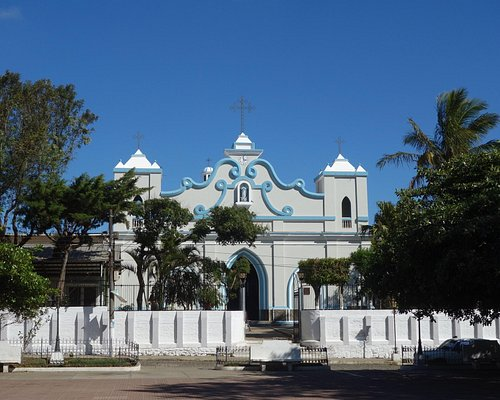

Departamento: AHUACHAPAN
Cabecera: Ahuachapan
Municipios: 12
Extencion territorial: 1,240 km²
numero de habitantes: 129,750
Atracción turistica: Ruta de las Flores
Ahuachapán es un departamento que se encuentra ubicado en la zona Occidental de El salvador, los departamentos con los cuales limita son Santa Ana, Sonsonate, y el Océano Pacífico y la República de Guatemala.
Su población es de 116,948 habitantes (Estimado 2013).
Ahuachapán fue fundado en el siglo V por índios mayas de la tribu pokomames, y sometida en el siglo XV por belicosos pipiles de los izalcos. Gradualmente la región fue invadida por los blancos.
El 11 de febrero de 1862 obtuvo su título de ciudad por una orden legislativa publicada en la "Gaceta Oficial" del 22 de febrero de 1862.
El 9 de febrero de 1869 obtuvo el título de capitál departamental.
1. Ahuachapán
2. Apaneca
3. Atiquizaya
4. Concepción de Ataco
5. El Refugio
6. Guaymango
7. Jujutla
8. San Francisco Menéndez
9. San Lorenzo
10. San Pedro Puxtla
12. Tacuba
13. Turín
La extensión de su término municipal es de 244,84 km². Fundación: 9 de febrero de 1869Densidad: 477 hab/km².
Ahuachapán cuenta con varios sitios turísticos, como por ejemplo Los Ausoles, Laguna el Espino,5 las Lagunas del Llano y de Morán o los saltos de Atehuecillas y de Malacatiupán. Dentro de los puntos de interés en la ciudad, se cuenta con la Plaza Mayor, constituida por el Parque Central, conocido como Parque La Concordia, el edificio de la Alcaldía, moderna estructura con un cierto aire de "art deco", reconstruida en la década de los 50´s, la Iglesia de "La Parroquia de La Asunción", hermosa edificación de estilo colonial con más de 100 años de antigüedad, y el nuevo punto de la ciudad, el "Pasaje La Concordia". contiguo a la Iglesia.
El Pasaje fue recientemente rescatado y remodelado por la Alcaldía de la localidad, siendo una hermosa área peatonal con preciosos y coloridos [murales], una bellísima fuente luminosa que hace las delicias de las familias que desean descansar o simplemente "ver pasar gente", o tomar una deliciosa taza de "café de altura", cultivado en las fincas aledañas (calidad de exportación), acompañado de un delicioso postre o croissant, muffin o algún platillo típico en cualquiera de los pequeños restaurantes, cafés y hostales de los alrededores, los cuales son ideales para conocer la ciudad a pie o a bordo de un "torito" -pequeños vehículos motorizados tipo taxi que acomodan 2 o 3 personas.
Posee la Iglesia La Asunción, el Parque Concordia donde se encuentra un monumento a la familia, el parque Francisco Menéndez donde se encuentra erigido el monumento al General Francisco Menéndez, ex presidente de la república, una placa de bronce señalando la casa donde vivió el poeta Alfredo Espino, el Arco Durán y la Casa de la Cultura.
Dámaso Aguilar, mismo creador del famoso Arco Durán, a petición de don Onofre Durán, construyó también la casa para don Federico Herrera, donde actualmente esta la Casa de la Cultura de la ciudad de Ahuachapán, quien deseaba una hermosa residencia para recibir y homenajear a importantes personalidades de la época.
El inmueble, considerado un patrimonio histórico al igual que el Arco Durán, es un testimonio fiel de la arquitectura de aquella época, cargada de elegancia y ostentosidad. La casa donde ahora se encuentra la casa de la cultura se decía que se había construido porque ahí vendría un presidente a hospedarse. Un personaje importante en la historia de estos monumentos y que casi nadie conoce fue Dámaso Aguilar, quien construyó muchas casas hermosas de esa época y fue el encargado de dar vida a estos maravillosos monumentos que son sin ninguna duda un patrimonio histórico para todos los Ahuachapanecos.
La principal tradición es el día de la Virgen, que se celebra con los farolitos el cual toma lugar el 7 de septiembre. En tal día los habitantes de la ciudad decoran las calles y casas con farolitos. Otras tradiciones incluyen el desfile de correos en honor a las fiestas patronales en honor al dulce nombre de Jesús, el día de la cruz, y muchos otros.
Si bien Ahuachapan como los 13 departamentos de El Salvador también tiene su propia su comida tradicional que apetece con solo mirarla. Entre sus deliciosos platios se encuentran :
Pupusas
Chilate
Empanadas
Atol de Piña
Pastelitos de Masa
Yuca Frita